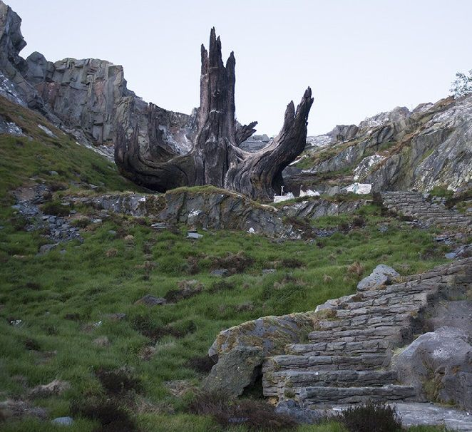

Lost Worlds Theme

Lost Worlds:
“Lost worlds” is the idea of discovering a “world” or some setting that is completely new and filled with wonders of things never seen before. Leaving everything up to your imagination, lost worlds can take many different forms from alien planets to new societies where animals fluently speak English. In this archaeology class, we learned that the theme of lost worlds can generally be seen in caveman films. One example of a film that we watched and analyzed in class that portrayed the idea of lost worlds is One Million Years B.C. Through showing illiterate humans (seemingly Neanderthals) living amongst abnormally large turtles, gigantic iguanas, and terrifying dinosaurs, the film shows the theme of lost worlds in several different parts of the movie. However, lost worlds are also ever-present in the Star Wars movie franchise. In this website, we will break down three different specific examples of just exactly where this idea of lost worlds can be found inside one of the world’s most loved movie series.
Kamino:
A primary example of lost worlds in Star Wars is the planet of Kamino which takes place in Star Wars: Attack of the Clones. Kamino is the rainy planet where the first army of the Galactic Republic was created: the clone army. However, the stormy planet’s history is not that straight forward. An old jedi named Sifo Dyas secretly traveled to this planet beyond the outer rim without the jedi council’s permission and ordered for a republic army be made for future use. Meanwhile, Count Dooku, a former Jedi turned to the dark side. In order to prove his worth, the all knowing Darth Sidius commanded Dooku (or Tyrannus) to kill Sifo Dyas, who was partners with Dooku in the past. After proving his loyalty to the Sith, Dooku deleted Kamino from the Jedi archives in the library, in order to delay the Jedi from discovering Sifo’s clone army.
However, in Attack of the Clones, we see everything that takes place after this part of the story of Kamino. Jedi master Obi-wan Kenobi, chased down Jango Fett – the one who was cloned for the galactic republic army – through a poison dart that was fired at an assassin Obi-wan was chasing down. This led Obi-wan to discover that Kamino had been deleted from the archives; so he traveled there to see what was going on. Upon arrival, the Kaminoans greet him saying that the army Sifo Dyas had ordered was ready.
Kamino, therefore, is a perfect representation of this idea of lost worlds. It’s mysterious and hidden past makes it a planet that no one understands the history of. Through the discovery of this lost world, the Jedi now know more information on what happened to Sifo Dyas and Count Dooku through the works of the cunning Darth Sidius. Obi-wan charted his course to a planet that, according to the highly held Jedi archives, did not exist. When he landed, he discovered an entire clone army that had not been known of until that very moment. This part of Attack of the Clones was truly mysterious and represents the theme of lost worlds accurately. The example of Kamino reminds me of the first movie we watched in class called Stargate, that also showed lost worlds because in that film, the protagonists travel to a world that had never been explored and it revealed an abundance of information to them.
Ahch-To
The unknown planet of Ahch-To is another great depiction of the theme in our class of lost worlds. Ahch-To is first discovered in the end of Star Wars: The Force Awakens after the entire movie’s purpose of finding the legend Luke Skywalker hiding there. Luke Skywalker had built quite a reputation for himself in the galaxy for defeating the Sith and bringing hope and temporary peace to the galaxy. However, he went into hiding on the remote planet of Ahch-To. Because of his immense power, the First Order (the new version of the Empire) led by Kylo Ren and Supreme leader Snoke are seeking him out because they have the majority of the map that leads to Skywalker, Kylo Ren’s uncle. The Force Awakens revolves around this plot because the “good guys” or the Resistance has the rest of the map and both sides are trying to reach Luke. Eventually, the Resistance completes the map by Rey and Finn (the protagonists) returning the final piece from a BB droid while getting chased by Kylo Ren. Rey, a future Jedi, finds Luke’s old lightsaber and is determined to return it. Therefore, she is chosen to take the map and navigate to the lost planet of Ahch-To to return the lightsaber and hopefully be trained by Master Skywalker.
This journey, told through the film of The Force Awakens, is essentially a build up to the discovery of a lost world. Ahch-To represents the theme of lost worlds that we have learned in archaeology because it was in an unknown location and held great mystery in the form of a hiding Luke Skywalker. This example reminds me of Planet of the Apes (1968) because as we discussed in class, the movie shows lost worlds because the astronauts land on a planet (that they don’t know is still Earth) and discover mysteries such as talking apes and the devolution of the human race. Additionally, in both of these movies, the main answer of each plot is not revealed until the very end. Ahch-To’s hidden nature the mysterious journey of Luke Skywalker both contribute to making it a great example of a lost world.
Exegol:
The dark and eerie Sith home planet of Exegol was not revealed until the most recent (and final) Star Wars episode of the third trilogy, Star Wars: The Rise of Skywalker. Exegol is just about as “lost” as lost worlds get. This planet’s location, only known by few people in the entire galaxy, is only accessible through the use of a Sith wayfinder. Exegol in episode nine is where the thought to be dead Darth Sidious had been hiding and building a final fleet of the first order to take over the galaxy by storm. Sidious was accompanied by a multitude of other Sith cultists, tanks of alien body parts, and many other dark and creepy things (Exegol is not somewhere you want to be). Through the determination of a fearless Jedi, Rey, along with a identity-seeking Kylo Ren, the two protagonists are able to navigate their way to Exegol and show the rest of the galaxy how to get there to save everyone from destruction. An example of a similar type of setting would be from another movie in our class, The Exorcist (1973). Although The Exorcist does not have much of a lost worlds theme, the whole movie has a similar tone to that of Exegol in The Rise of Skywalker. Both of these examples are eerie, dark, mysterious, and full of evil. This mysterious planet of Exegol is an ideal representation in the Star Wars series of the theme of lost worlds that we have in this archaeology class because of its unknown identity and containment of untold secrets and stories.